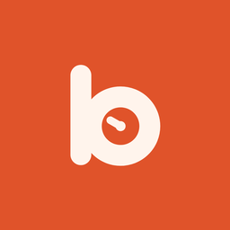

bWhen
When did I last…? Log what you do now and then in one tap, ask out loud, and get reminded at the right time. For iPhone, Apple Watch, Android and Wear OS, in 54 languages. Your data stays on your device.
Quando foi a última vez que…? Registre o que você faz de vez em quando num toque, pergunte em voz alta e seja lembrado na hora certa. Seus dados ficam no seu aparelho.
Support
Questions, ideas or problems: write to atendimento@bernisoftware.com.br. We answer in English, Portuguese and Spanish.
Backups
On iPhone, bWhen keeps a daily backup in your iCloud Drive (Settings › Backup). On Android, your data goes into your phone's Android backup on Google Drive. In Settings you can also export a .bwhen file to move to another phone, including from iPhone to Android and back.
Siri and Shortcuts
Say “Ask bWhen”, “topic in bWhen” or “Log topic in bWhen”. On Android, long-press the app icon for “Ask by voice”.